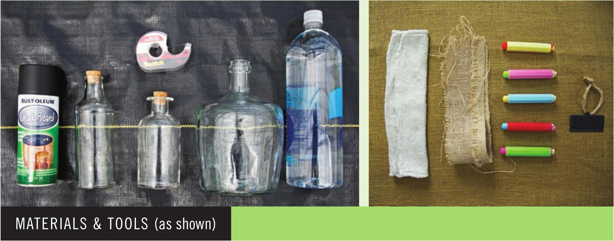

HOW TO BUILD A BOTTLE HYDROPONIC GARDEN This hydroponic bottle is the easiest hydroponic garden in this book and a great first step into hydroponics. I love building this system with kids from ages 8 to 18 when I do school visits. There are so many ways to customize the bottle with different paints and decorations, so it is easy to make this garden your own. To simplify the assembly of this system, you may wish to find a bottle with an opaque exterior to skip the painting process. Required Glass or plastic bottle Stone wool seedling plug sized for bottle opening Fertilizer Optional Scotch tape Stake for mounting while painting Blackboard spray paint Chalk Burlap or cloth Bottle label Grow light Bottle Preparation The bottle selection is the most critical decision in this build. The ideal bottle has a short neck so the plug can quickly access the main body of the bottle. If possible, select a wide bottle. Wide bottles maintain their water level longer, giving the roots more opportunity to grow into the nutrient solution before the water level drops due to evapotranspiration. The following steps are for clear bottles, so please skip to the next section if using a nontransparent bottle. 1 Remove any labels from the bottle. 2 Add a strip of tape along the side. This will be removed later to create a viewing window for the roots. Fold the end of the tape strip on the bottom of the bottle to make removal easier after painting. Optional Tools Scissors Funnel Hot glue gun HYDROPONIC GROWING SYSTEMS 45
